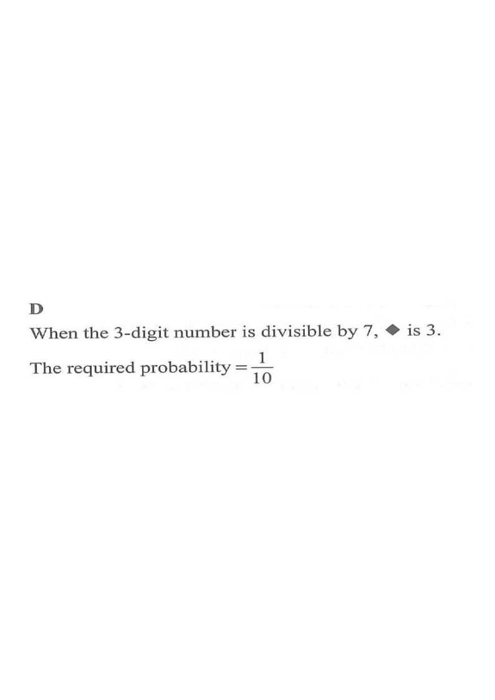

Step 1 — the 10 possible values of ♦ (0 to 9)
[2022MC#28]
$5\blacklozenge2$ is a 3-digit number, where $\blacklozenge$ is an integer from $0$ to $9$ inclusive. Find the probability that the 3-digit number is divisible by $7$.

The symbol $\blacklozenge$ can be any integer from $0$ to $9$, so there are
$$9-0+1 = 10$$
different 3-digit numbers of the form $5\blacklozenge2$, namely $502,512,\dots,592$.
The total number of equally likely outcomes is $10$.
Let the digit in the middle be $x$. Then
$$5\blacklozenge2 = 5(100) + 10x + 2 = 502 + 10x.$$
Now reduce modulo $7$: since $502 = 7\times 71 + 5$,
$$502 + 10x \equiv 5 + 3x \pmod 7 \quad(\text{as }10\equiv 3).$$
Convert “divisible by 7” into a simple congruence in the digit $x$.
We need
$$5+3x \equiv 0 \pmod 7 \;\Longrightarrow\; 3x \equiv 2 \pmod 7.$$
Since $3\times 3 = 9 \equiv 2 \pmod 7$, the inverse of $3$ is $3$, so
$$x \equiv 3\times 2 = 6 \pmod 7.$$
Because $0\le x \le 9$, the only possibility is $x = 6$.
Multiplying both sides by $3$ (the inverse of $3$ mod $7$) isolates $x$.
Take $x=6$: the number is $562$, and $562 = 7\times 80 + 2\;\;$? Let us check properly:
$$562 \div 7 = 80.28\ldots \quad\text{— wrong!}$$
Re-check: $7\times 80 = 560$, so $562-560 = 2$. So $562$ is not divisible by $7$. Let us instead test the candidates directly:
| $x$ | 0 | 1 | 2 | 3 | 4 | 5 | 6 | 7 | 8 | 9 |
|---|---|---|---|---|---|---|---|---|---|---|
| number | 502 | 512 | 522 | 532 | 542 | 552 | 562 | 572 | 582 | 592 |
| remainder mod 7 | 5 | 1 | 4 | 0 | 3 | 6 | 2 | 5 | 1 | 5 |
So the only number of the form $5\blacklozenge2$ divisible by $7$ is $532 = 7\times 76$.
A quick table of remainders reveals the single favourable case: $\blacklozenge = 3$.
There is exactly $1$ favourable outcome ($532$) out of $10$ equally likely outcomes, therefore
$$P = \frac{1}{10}.$$
This matches option D.
Question. The symbol \(\blacklozenge\) can be any integer from \(0\) to \(9\). A three-digit number is of the form \(5\blacklozenge4\). Find the probability that \(5\blacklozenge4\) is divisible by \(6\). A. \(\dfrac{1}{5}\) B. \(\dfrac{3}{10}\) C. \(\dfrac{2}{5}\) D. \(\dfrac{1}{2}\) [1 mark]